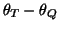
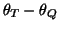
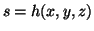
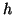
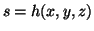
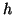

Next: Acknowledgements
Up: A dynamical model for
Previous: Results
Conclusions
A new dynamical model has been introduced which is capable of replicating
many of the important features of the human ECG.
Moreover, many of the morphological changes observed in the human ECG
manifest as a consequence of the geometrical structure of the model.
Model parameters may be
chosen to generate different morphologies for the PQRST-complex.
The power spectrum of the RR-intervals can be selected a priori and used
to drive the ECG generator. This allows the operator to prescribe specific
characteristics of the heart rate dynamics such as the mean and standard
deviation of the heart rate and
spectral properties such as the LF/HF ratio.
In addition the average morphology can be controlled by specifying the
positions of the P,Q,R,S and T events and the magnitude of their effect
on the ECG.
Having access to a realistic ECG provides a benchmark for testing
numerous biomedical signal processing techniques. In order to establish
the operational properties of these techniques in a clinical setting,
it is important to know
how they perform for different noise levels and sampling frequencies.
A number of applications and simple extensions of the model are possible:
(i) By fitting (see [17]) the model
to the morphology of a particular subject's ECG
and the power spectrum of their RR-intervals,
a database of realistic ECGs could be created.
This database could be employed for statistical hypothesis testing.
Furthermore, it may be possible derive a corrected QT-interval which is
independent of the heart rate.
(ii) The synthetic ECG could be used to assess the effectiveness of
different techniques for noise and artefact removal.
These could be evaluated by adding noise and/or artefact onto the
synthetic signal and then comparing the original with the processed signal.
(iii) Abnormal morphological changes with time could be introduced
by using a parameter to control the position of any of the P,Q,R,S or T events.
This extension would be particularly useful for testing techniques
which aim to detect ST depression or elevation by decreasing or
increasing the  -position of the T wave over time.
Similarly QT prolongation could be replicated by moving the T point away
from the Q point in the
-position of the T wave over time.
Similarly QT prolongation could be replicated by moving the T point away
from the Q point in the  plane (increasing
).
(iv) The model could be used to produce multi-lead ECG signals by
introducing a measurement function which maps from the
plane (increasing
).
(iv) The model could be used to produce multi-lead ECG signals by
introducing a measurement function which maps from the
 model space to the ECG signal: . Different lead
configurations and modulations due to respiration and movement of the
cardiac axis could be modelled using time-dependent functions for .
(v) Abnormal beats, such as ectopics, can be simulated by
modifying the position of the R-peak for one cycle of the dynamics.
The new model presented here reflects a data-driven approach to modelling the
electrical activity of the heart. Key physiological features have been
incorporated using motion of a trajectory throughout a three-dimensional state
space. The quasi-periodicity of the cardiac cycle is represented by
attraction towards a limit cycle.
The model produces QT-intervals and R-peak height variation (RSA)
which vary linearly with the RR-intervals
as has been found in real ECGs [6,4].
It is hoped that this model will provide a valuable tool
for testing biomedical signal processing algorithms applied to ECG signals
with different sampling frequencies and
levels of noise and/or movement artefact.
model space to the ECG signal: . Different lead
configurations and modulations due to respiration and movement of the
cardiac axis could be modelled using time-dependent functions for .
(v) Abnormal beats, such as ectopics, can be simulated by
modifying the position of the R-peak for one cycle of the dynamics.
The new model presented here reflects a data-driven approach to modelling the
electrical activity of the heart. Key physiological features have been
incorporated using motion of a trajectory throughout a three-dimensional state
space. The quasi-periodicity of the cardiac cycle is represented by
attraction towards a limit cycle.
The model produces QT-intervals and R-peak height variation (RSA)
which vary linearly with the RR-intervals
as has been found in real ECGs [6,4].
It is hoped that this model will provide a valuable tool
for testing biomedical signal processing algorithms applied to ECG signals
with different sampling frequencies and
levels of noise and/or movement artefact.
Next: Acknowledgements
Up: A dynamical model for
Previous: Results
2003-10-08